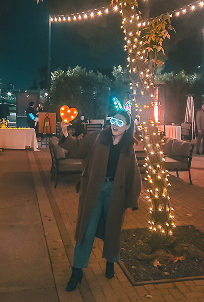

Hi, I’m Yunsun Joo — a product designer and illustrator.
I have over 6 years of experience working on digital products, motion graphics, and storytelling.
I design to make things clear and easy. From helping users onboard faster to making checkout smoother, I create systems that feel simple — because good design should just work.
As an illustrator, I add story, rhythm, and feeling into my designs. I don’t just make screens — I make experiences people can trust and enjoy.
I like to balance structure and emotion, logic and care.
For me, design isn’t just how it looks — it’s how it works, and how it makes people feel.
I want to build useful products that solve real problems and help people in a thoughtful way.
I don’t just design screens - I fix broken systems.
When things don't work, I don’t wait for permission - I ask the hard questions, build the missing pieces, and make it better.
Because good design doesn’t just look good - it works, lasts , and empowers.
I don’t wait for instructions - I identify problems and move fast to fix them. I’ve worked as a bridge between users, sales, and product
- and I naturally stepped into product owner roles when none existed.
I value clarity, process, and speed. I design systems that reduce errors, eliminate friction, and help teams work smarter - not harder.
I work well in cross-functional teams, especially in fast-paced or ambiguous environments. I’m not afraid to speak up, but I always aim for respectful, solution-oriented communication. I thrive when I can partner with engineers, marketers, and customer-facing teams to make real impact.
"I like things simple and a little playful — just like this." 🐰✨"
I believe design should solve real problems - not decorate them. I’m driven by curiosity, empathy, and a desire to make systems more humane. I want my work to create value that lasts — for both users and the teams behind the scenes. I'm not afraid to build from scratch or challenge the status quo - especially when users are struggling and no one else is stepping up.
Designed and coded solo. Debugged it to life. The site grew as I did.
Let’s build something real —